Автентифікація користувачів реєстру та підпис даних
| 🌐 Цей документ доступний українською та англійською мовами. Використовуйте перемикач у правому верхньому куті, щоб змінити версію. |
1. Загальний опис
Платформа реалізує складні механізми автентифікації кінцевих користувачів, які забезпечують належний захист даних та нівелюють можливість несанкціонованого доступу до інформації.
В основі механізму автентифікації лежить Система управління ідентифікацією та доступом (IAM) Keycloak, яка взаємодіє з Сервісом для роботи з КЕП та інтегрованою системою електронної ідентифікації ID.GOV.UA (ICEI). Також на платформі функціонують специфічні сервіси автентифікації посадових осіб та отримувачів послуг реєстру — автентифікатори (див. детальніше — Логіка автентифікації користувачів).
Окрім цього, платформа використовує Kong API Gateway для управління, захисту та моніторингу доступу до API, що забезпечує додатковий рівень захисту та контролю над доступом до даних та сервісів платформи.
Взаємодія між усіма компонентами гарантує надійний механізм автентифікації, який адаптується до різних типів користувачів та їхніх ролей у системі. В результаті, користувачі можуть впевнено працювати з реєстрами, знаючи, що їх особисті дані та інформація знаходяться під надійним захистом, а можливість несанкціонованого доступу до системи зведена до мінімуму.
- Наразі Платформа підтримує 2 типи автентифікації :
-
-
автентифікація користувача за допомогою кваліфікованого електронного підпису (КЕП);
-
автентифікація користувача за допомогою інтегрованої системи електронної ідентифікації ID.GOV.UA (ІСЕІ) — зовнішнього постачальника ідентифікаційних даних.
-
2. Логіка автентифікації користувачів
За автентифікацію користувачів реєстру відповідають такі сервіси:
-
Сервіс автентифікації отримувачів послуг —
keycloak-ds-citizen-authenticator; -
Сервіс автентифікації посадових осіб —
keycloak-ds-officer-authenticator.
Для ідентифікації користувача у системі, сервіс автентифікації має отримати з КЕП, або від зовнішнього надавача послуг (id.gov.ua) як обов’язкові вхідні параметри наступні атрибути:
-
drfo(РНОКПП) — ідентифікаційний номер, або серія і номер паспорта особи. -
edrpou(ЄДРПОУ) — код організації, до якої належить особа. -
fullName(ПІБ) — прізвище, ім’я та по батькові особи.
У процесі автентифікації відбувається пошук користувача у базі даних за атрибутом drfo. Якщо користувача з відповідним атрибутом знайдено, то відбувається порівняння атрибутів fullName та edrpou (за наявності). Порівняння атрибутів drfo та edrpou відбувається за повним збігом їх значень.
|
Для атрибута fullName (ПІБ) застосовується інша стратегія — нечітке порівняння рядків, що не враховує спеціальні символи.
|
Стратегія нечіткого порівняння рядків передбачає застосування наступних валідаційних правил:
-
Перед порівнянням рядки приводяться до нижнього регістру.
-
Видаляються усі символи, окрім латинських та кириличних літер та цифр.
-
Довжина рядка після нормалізації має бути не менш як 50% від оригінального.
|
3. Автентифікація через IIT-віджет
3.1. Автентифікація за допомогою КЕП
Автентифікація користувачів за допомогою кваліфікованого електронного підпису (КЕП) відбувається з використанням встановленого на стороні браузера стороннього віджета IIT для виконання операцій, що вимагають шифрування та підпису даних, а також сервісу для роботи з КЕП, що використовує окрему криптобібліотеку від IIT на стороні Платформи для перевірки цілісності та незмінності даних, що передаються з вебклієнта.
Взаємодія користувачів з Платформою та розгорнутими на її базі реєстрами відбувається виключно через імплементовані вебінтерфейси — додатки Кабінет отримувача послуг та Кабінет посадової особи — із будь-якого визнаного індустрією браузера останньої версії.
Автентифікація з КЕП передбачає використання асиметричних алгоритмів шифрування, що забезпечують криптографічний захист даних користувачів.
Для отримання доступу до функцій Кабінету, користувач має увійти до системи, виконавши кроки, описані нижче в інструкції.
| Автентифікація з КЕП доступна для користувачів Кабінетів посадової особи та отримувача послуг реєстру. |
3.1.1. Передумови
Отримайте особистий ключ для підпису даних в одному з акредитованих центрів сертифікації ключів (АЦСК). Відкритий ключ зберігатиметься на сервері постачальника, в той час, як секретний (закритий) ключ необхідно буде зберегти на одному із захищених носіїв, доступних для використання при вході до системи за допомогою КЕП (див. крок 3 в підрозділі Проходження автентифікації).
3.1.2. Проходження автентифікації
| Процес автентифікації за допомогою КЕП є ідентичним як для посадових осіб, так і для отримувачів послуг реєстру. |
Розглянемо процес проходження автентифікації на прикладі Кабінету отримувача послуг.
- Крок 1
-
-
Відкрийте сторінку входу до Кабінету отримувача послуг за адресою
http://citizen-portal-<назва-реєстру>-main.apps.envone.dev.registry.eua.gov.ua/, якщо ви фізична, або юридична особа, або ФОП і хочете замовити послугу. -
Відкрийте сторінку входу до Кабінету посадової особи за адресою
http://officer-portal-<назва-реєстру>-main.apps.envone.dev.registry.eua.gov.ua/officer/, якщо ви посадова особа, що уповноважена надавати послуги.Адреси сервісів, що наведені у тексті вище, є шаблонними. Підставте назву свого реєстру в URL сервісу. При виникненні будь-яких питань, зверніться до адміністратора.
-
- Крок 2
-
Натисніть Увійти до кабінету.
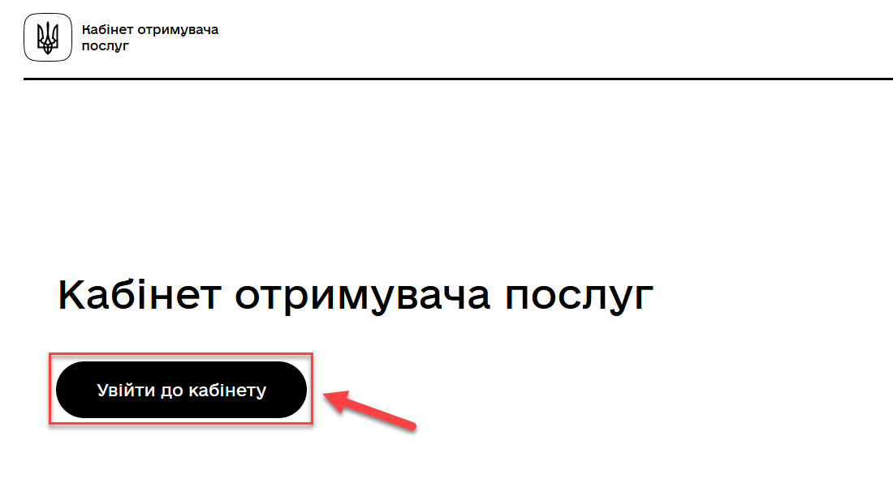
- Крок 3
-
-
Оберіть тип послуг:
-
Для громадян — якщо ви бажаєте увійти як фізична особа (параметр встановлюється за замовчуванням);
-
Для бізнесу — якщо ви бажаєте увійти як ФОП або юридична особа.
-
-
Оберіть тип носія особистого ключа.
Оберіть Файловий носій (параметр встановлюється за замовчуванням).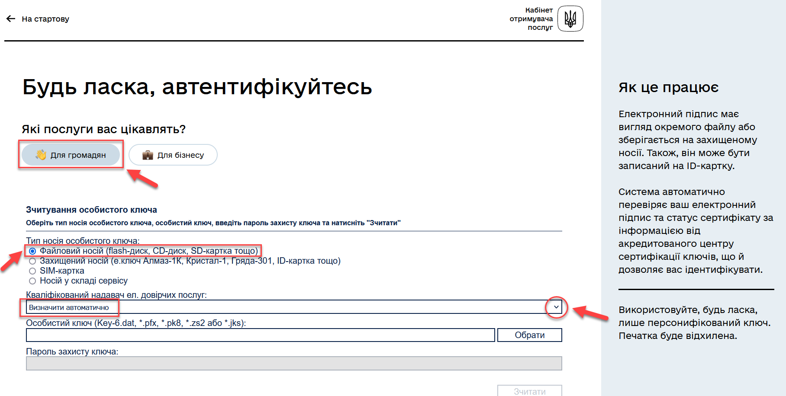
-
У полі
Кваліфікований надавач ел. довірчих послугоберіть один з акредитованих центрів сертифікації ключів (АЦСК), натиснувши на елемент випадного списку, або залиште значенняВизначити автоматично, встановлене за замовчуванням.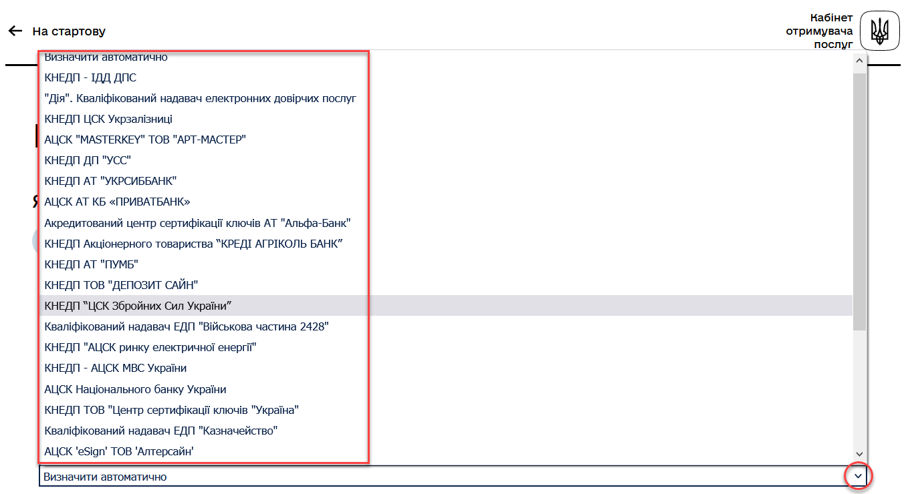
-
Оберіть особистий ключ:
-
У полі
Особистий ключнатисніть Обрати. -
Знайдіть особистий ключ (наприклад
key-6.dat) та натисніть Open для підтвердження.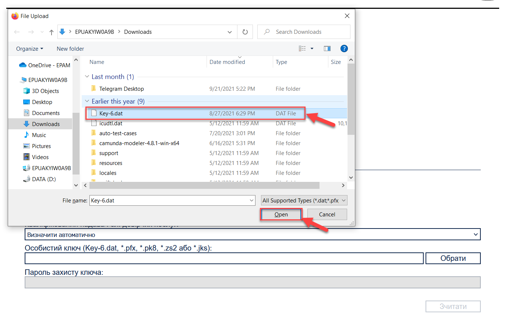
-
-
У полі
Пароль захисту ключавведіть пароль захисту ключа. -
Натисніть Зчитати для перевірки введених даних.
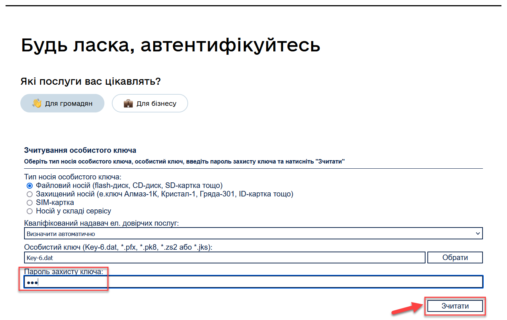
-
- Крок 4
-
-
На формі підпису даних натисніть Увійти для входу до Кабінету.
-
(Альтернативно) Натисніть Змінити ключ, якщо необхідно обрати інший ключ для входу.
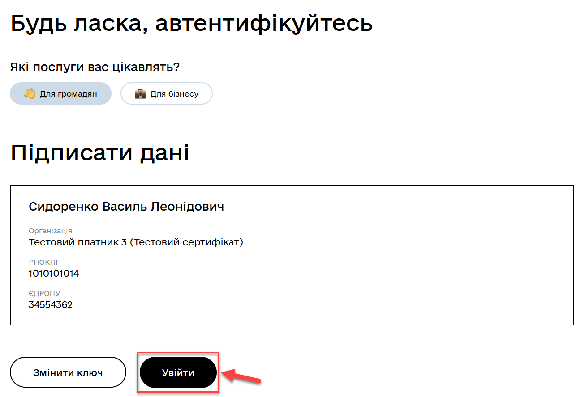
У разі використання невірного ключа, на кроці підпису даних сервер повертає помилку:
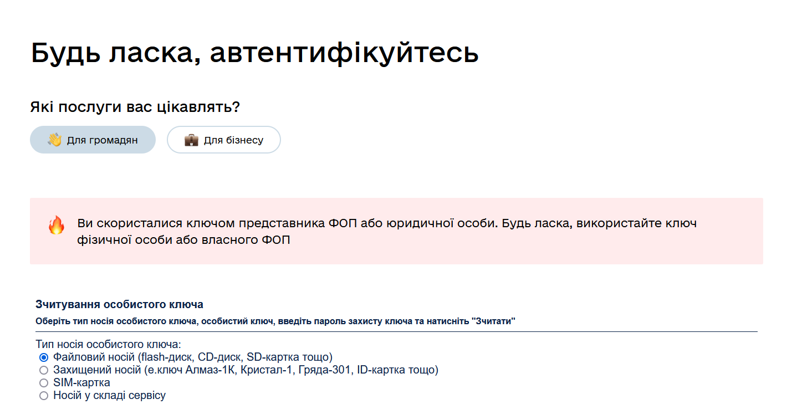
У разі введення невірних ідентифікаційних даних (як-от пароль захисту ключа тощо), на кроці підпису даних сервер повертає таку помилку:
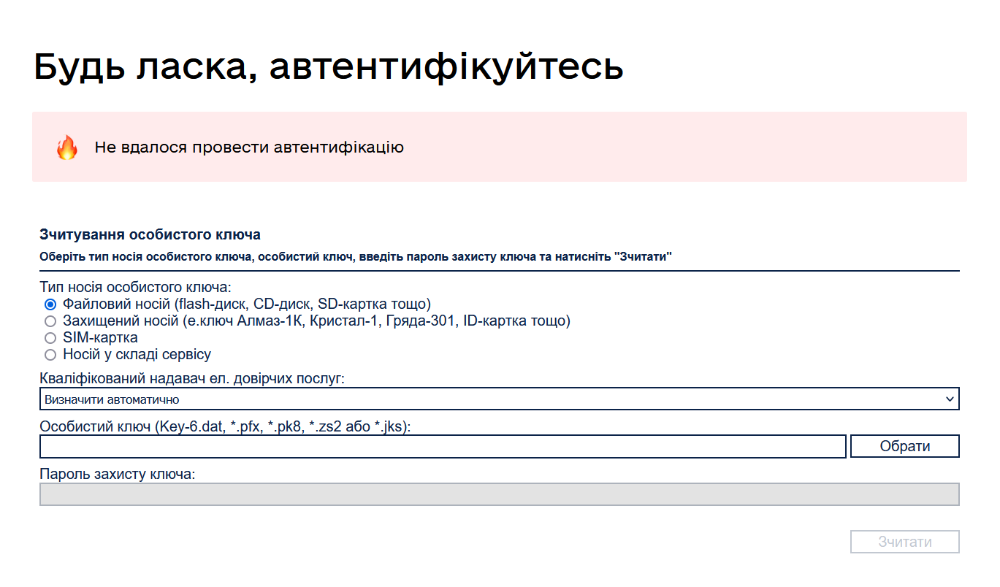
-
|
Після успішного проходження автентифікації у Кабінеті отримувача послуг, під час першого входу, особі буде запропоновано пройти процес онбордингу[1]. Після проходження цього процесу, особа отримає доступ до функцій Кабінету. |
| У Кабінеті посадової особи процес онбордингу не передбачений. Тому перед входом до Кабінету необхідно переконатися, що адміністратор доступу створив відповідного користувача. |
3.2. Автентифікація за допомогою хмарного ключа
| Опція автентифікації за допомогою хмарного ключа доступна як надавачам, так й отримувачам послуг, які мають в наявності хмарний ключ. |
-
Відкрийте логін-сторінку вашого Кабінету та перейдіть до опцій автентифікації.
-
Для вибору автентифікації з використанням хмарного ключа, оберіть на віджеті Носій у складі сервісу.
Для деяких віджетів це значення відображається із назвою Хмарний ключ або Хмарне сховище (як-от для id.gov.ua). 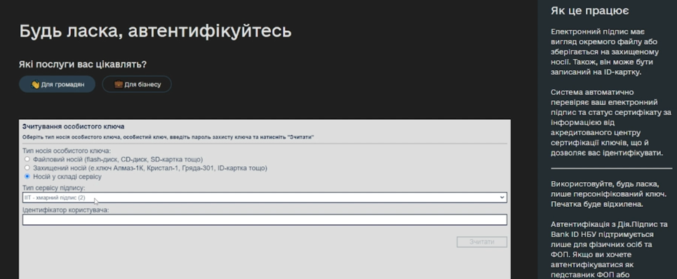
-
Оберіть емітента (видавця) хмарного ключа з випадного списку у полі Тип сервісу підпису. Наприклад,
DepositSign - хмарний підпис.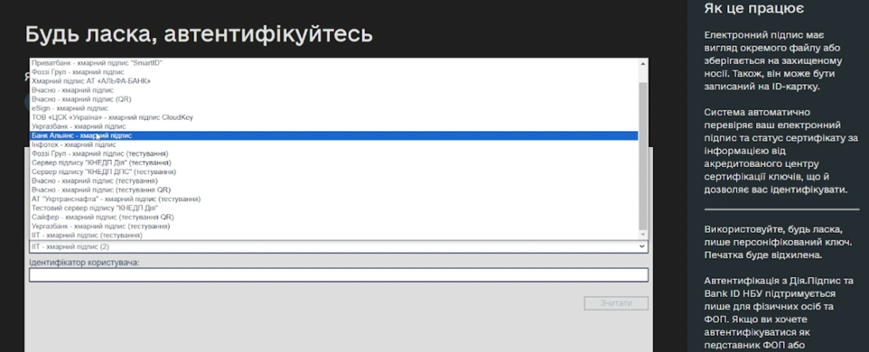
-
Залежно від значення, яке було обрано в полі Тип сервісу підпису, на екрані відобразиться або QR-код для сканування, або ідентифікатор користувача.
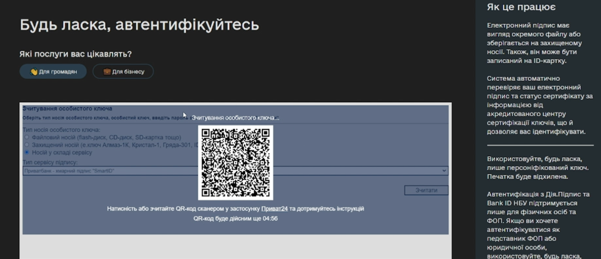Зображення 1. QR-код для сканування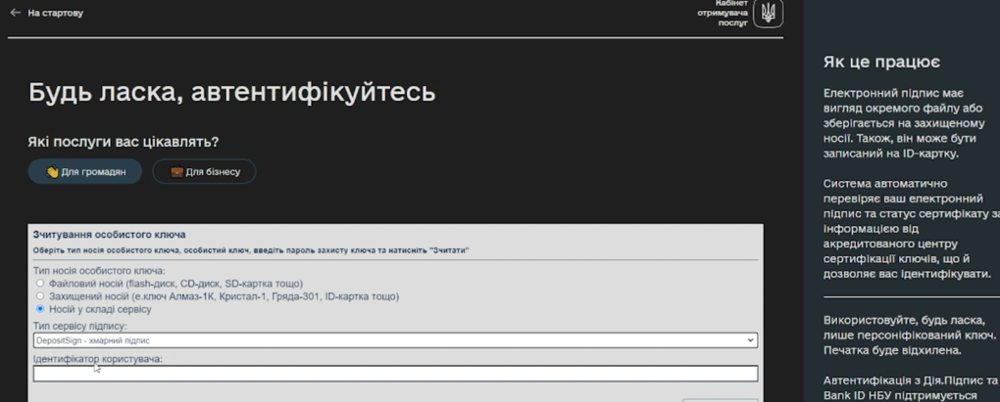Зображення 2. Ідентифікатор користувача -
У обох випадках процес подальшого підтвердження автентифікації здійснюється через мобільний телефон. Для автентифікації з використанням ключа від DepositSign необхідно ввести ідентифікатор. Після цього на мобільний телефон користувача надсилається повідомлення з проханням підтвердити дію. Якщо підтвердження успішне, з’являється сторінка входу до кабінету, де необхідно знову виконати процедуру підтвердження.
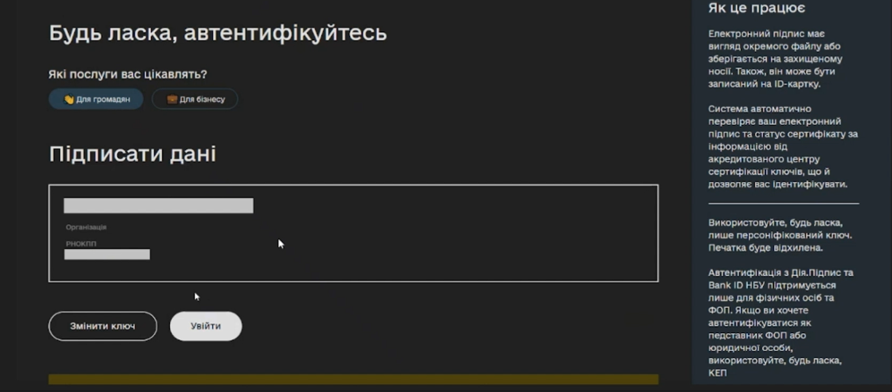 -
Після цього користувач успішно автентифікується у Кабінеті.
4. Автентифікація з ID.GOV.UA
Платформа надає можливість здійснювати автентифікацію за вбудованого віджета id.gov.ua — Інтегрованої системи електронної ідентифікації (ІСЕІ).
Автентифікація через зовнішнього провайдера можлива як для отримувачів послуг, так і для посадових осіб (надавачів послуг) реєстру.
ІСЕІ id.gov.ua має атестат відповідності комплексної системи захисту інформації (КСЗІ), тому персональні дані користувачів надійно захищені.
| Для отримання деталей підключення та використання ID.GOV.UA, будь ласка, зверніться до технічної документації або офіційного сайту. |
4.1. Автентифікація посадових осіб (надавачів послуг)
-
Відкрийте логін-сторінку вашого Кабінету та перейдіть до опцій автентифікації.
-
Натисніть на відповідний елемент для автентифікації з ID.GOV.UA.
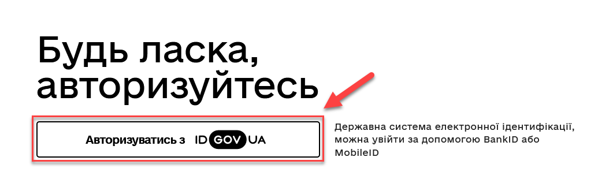
-
Оберіть вхід за допомогою Електронного підпису.
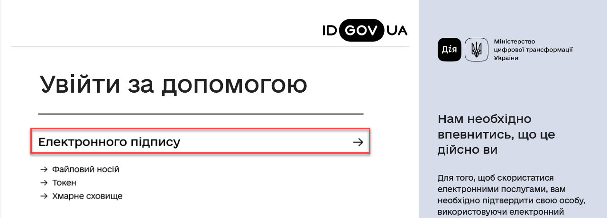
-
Оберіть метод автентифікації — Файловий носій або Хмарний ключ.
Посадові особи можуть автентифікуватися як через файловий носій, так і хмарний ключ.
Файловий носій – це спеціальний файл, який містить ваш особистий ключ. Зазвичай цей файл має назву
Key-6з розширенням*.dat(зустрічаються також розширення *.pfx, *.pk8, *.zs2, *.jks).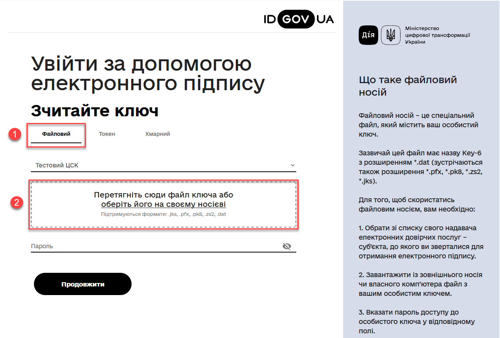
-
Завантажте із зовнішнього носія чи власного комп’ютера файл із вашим особистим ключем.
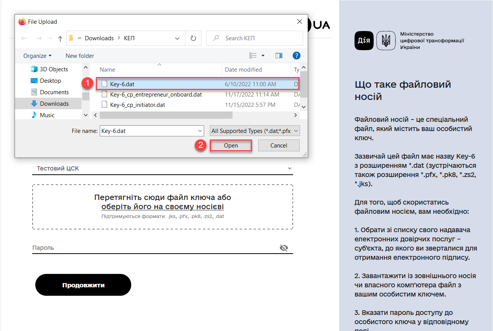
-
Вкажіть пароль доступу до особистого ключа у відповідному полі та натисніть Продовжити.
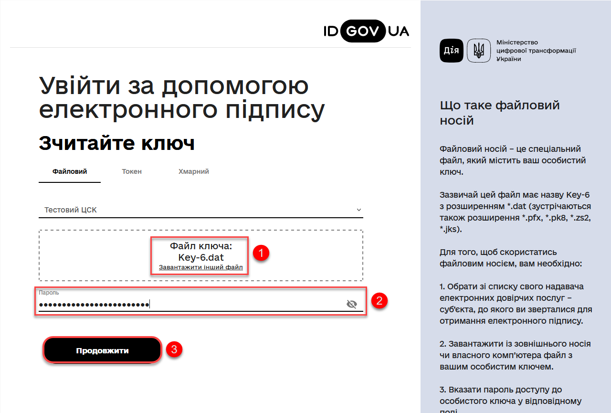
У разі успішного зчитування ключа та проходження автентифікації, посадова особа зможе увійти до Кабінету.
4.2. Автентифікація отримувачів послуг
|
Автентифікація за допомогою
Зверніть увагу, що користувач більше не може обирати спосіб автентифікації на одній сторінці. В один момент часу доступний лише один з двох способів автентифікації, налаштований адміністратором реєстру — IIT-віджет або id.gov.ua. |
- Процес автентифікації є наступним:
-
-
Відкрийте логін-сторінку вашого Кабінету та перейдіть до опцій автентифікації.
-
Оберіть опцію Для громадян або Для бізнесу.
-
Автентифікуйтеся через віджет
ID.GOV.UA.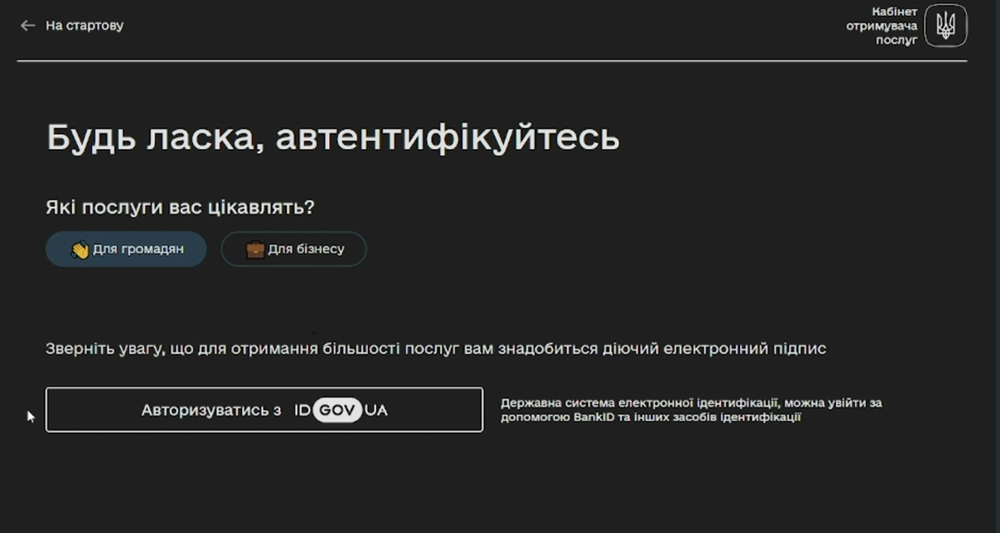Зображення 3. Автентифікація через id.gov.ua -
Оберіть бажану схему (спосіб) автентифікації.
Отримувачі послуг реєстру можуть використовувати такі способи автентифікації з
id.gov.ua:-
Електронний підпис
-
Bank ID НБУ
-
Дія.Підпис
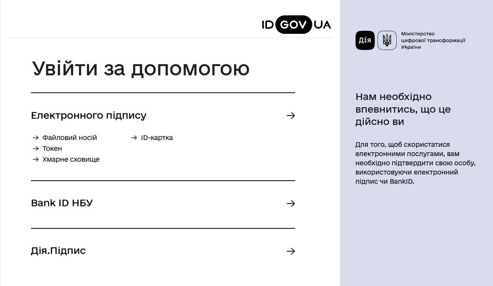
-
-
Дотримуйтеся інструкцій, описаних у підрозділах нижче.
Уся обробка даних відбувається на стороні id.gov.ua. Детальніше про кожен тип автентифікації ви можете дізнатися на офіційному сайті.
-
4.2.1. Автентифікація з електронним підписом
Електронний підпис є аналогом власноручного підпису та забезпечує правдивість і цілісність інформації, викладеної у документі, а також дає змогу підтвердити цілісність електронного документа та ідентифікувати особу, яка підписала документ.
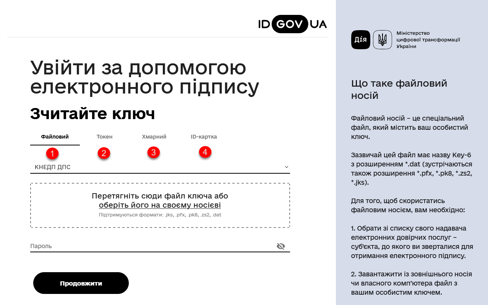
-
Оберіть опцію Увійти за допомогою електронного підпису.
-
Оберіть тип ключа, яким ви хочете підписати дані:
-
Файловий носій — це спеціальний файл, який містить ваш особистий ключ. Зазвичай цей файл має назву Key-6 з розширенням *.dat (зустрічаються також розширення *.pfx, *.pk8, *.zs2, *.jks).
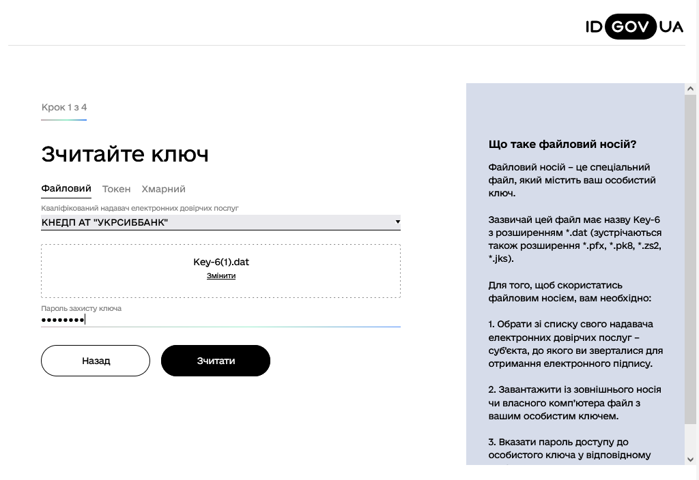
Автентифікація з цим методом є аналогічною до описаної до у розділі Автентифікація за допомогою КЕП. -
Хмарне сховище — якщо ваш особистий ключ зберігається за допомогою стороннього сервісу (зберігання у захищеному хмарному сховищі), то для зчитування ключа необхідно обрати свого надавача зі списку та пройти авторизацію у його системі.
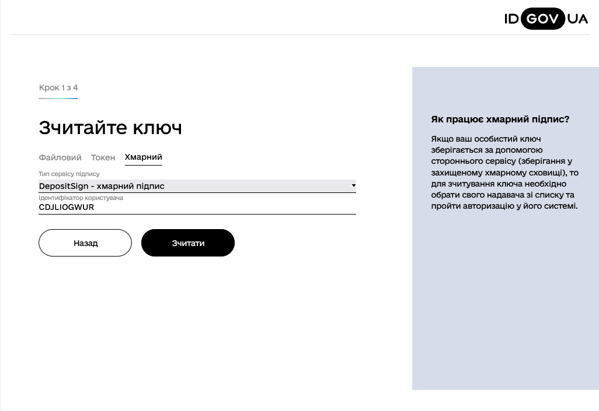
-
Токен — метод автентифікації за допомогою апаратно-програмного пристрою, який працює на базі криптобібліотеки. На Платформі можливим варіантом використання токена
Що таке токен?
Токен — це спеціальний апаратно-програмний пристрій, який захищає особисті ключі від копіювання чи зміни зловмисниками. Токен може мати форму USB-пристрою або у формі смарткартка (картки з чипом). Прикладами токенів є пристрої Алмаз-1К, Кристал-1,
Гряда 301тощо.Щоб скористатися токеном:
-
Під’єднайте ваш токен через USB-порт (якщо у вас токен у формі USB-пристрою) або скористатися спеціальним зчитувачем інформації (якщо у вас токен у формі смарткартка).
-
Оберіть зі списку свого надавача електронних довірчих послуг — суб’єкта, до якого ви зверталися для отримання електронного підпису.
-
Зі списку токенів оберіть тип пристрою, який ви хочете використати.
-
Вкажіть пароль доступу до особистого ключа у відповідному полі.
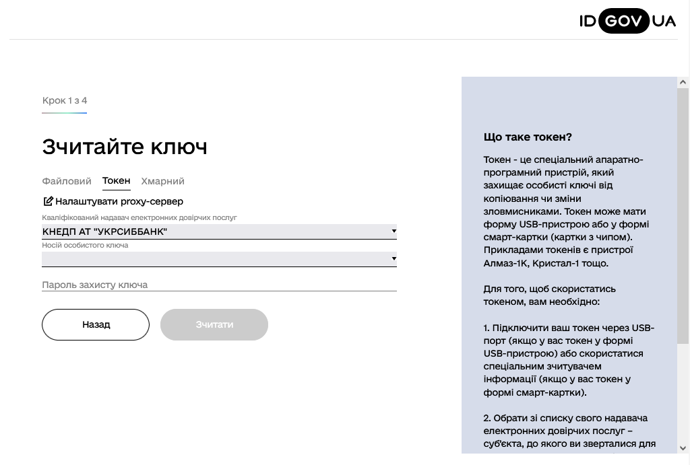
-
-
ID-картка (Не використовується)
-
-
Виконайте усі необхідні кроки, після чого ви зможете увійти до Кабінету.
4.2.2. Автентифікація з BankID НБУ
Сервіс надається Національним банком України та можливий лише для клієнтів тих банків, які його підтримують.
Після обрання свого банку ви будете переадресовані на його сайт для проходження автентифікації з використанням логіну, пароля, номера картки.
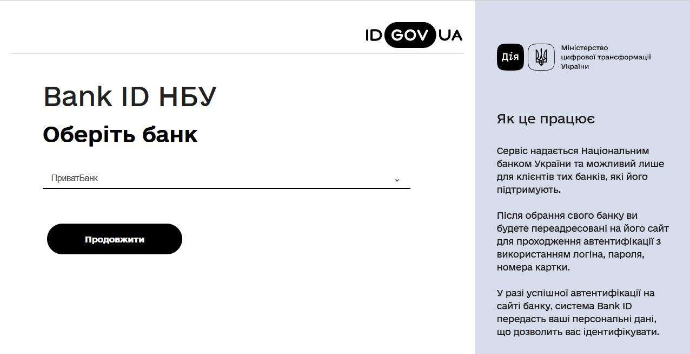
У разі успішної автентифікації на сайті банку, система Bank ID передасть ваші персональні дані, що дозволить вас ідентифікувати.
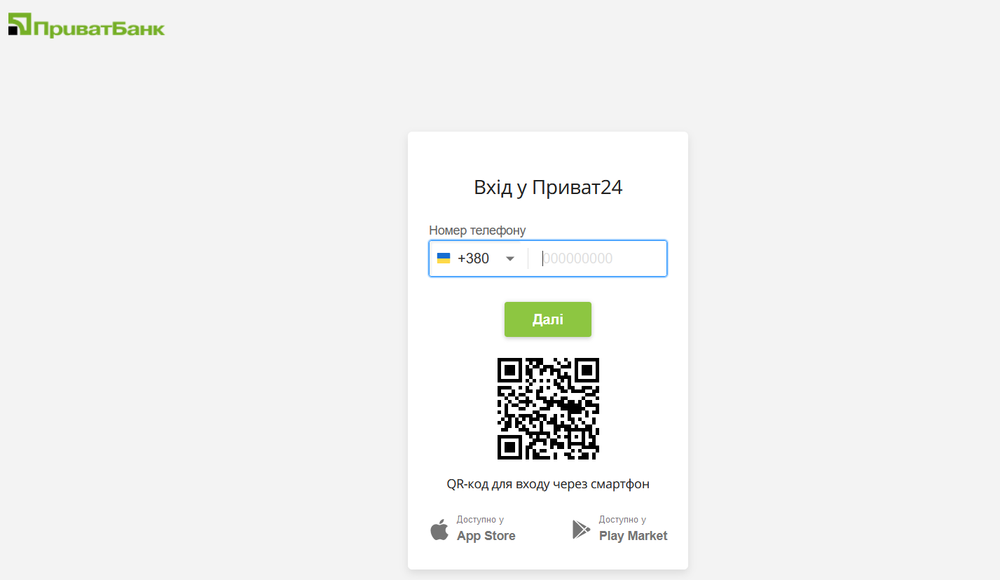
4.2.3. Автентифікація з Дія.Підпис
Дія ID — послуга електронної ідентифікації для користувачів, які отримували особистий ключ віддалено за допомогою мобільного застосунку Дія. Дія.Підпис містить дві частини. Одна частина зберігається у вашому смартфоні, а інша — в спеціальному захищеному модулі порталу Дія.
Отримати особистий ключ віддалено за допомогою мобільного застосунку Дія мають можливість громадяни України, які є власниками ID-картки або біометричного закордонного паспорта.
Щоб авторизуватися на сайті за допомогою Дія ID:
-
Проскануйте QR-код.
-
Зчитайте особистий ключ шляхом сканування обличчя (перевірки за фото) та вводу пароля до особистого ключа.
-
У разі успішної автентифікації у мобільному застосунку Дія, система передає ваші персональні дані, що дозволить вас ідентифікувати.
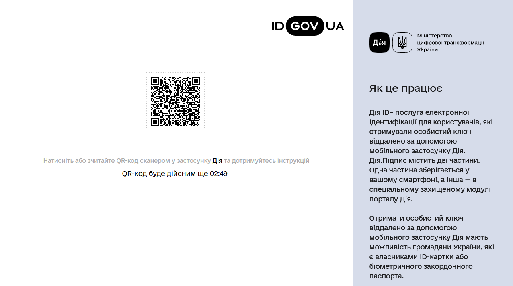
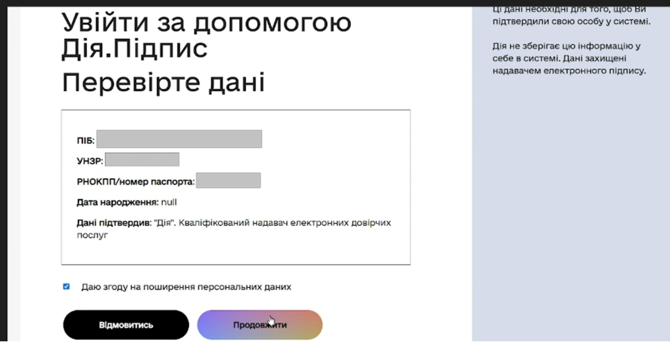
5. Підпис даних
5.1. Підпис даних хмарним ключем через IIT-віджет
| Опція автентифікації хмарним ключем доступна для користувачів обох типів кабінетів, умовою є наявність хмарного ключа у користувача. |
Процес підпису даних за допомогою хмарного ключа на віджеті виконується за тією ж схемою, що й автентифікація через IIT-віджет із використанням хмарного ключа (див. детальніше Автентифікація за допомогою хмарного ключа).
5.2. Підпис даних хмарним ключем через віджет ID.GOV.UA
Отримувачі послуг, зокрема фізичні особи та ФОП можуть підписувати дані, перейшовши на сторінку id.gov.ua. Після переходу цим користувачам доступні такі опції:
-
Використання КЕП
-
Використання хмарного ключа
-
Використання Дія.Підпис
5.2.1. Використання КЕП для підпису даних
-
При переході на задачу підписання даних у бізнес-процесі, користувачам відображається наступний віджет:
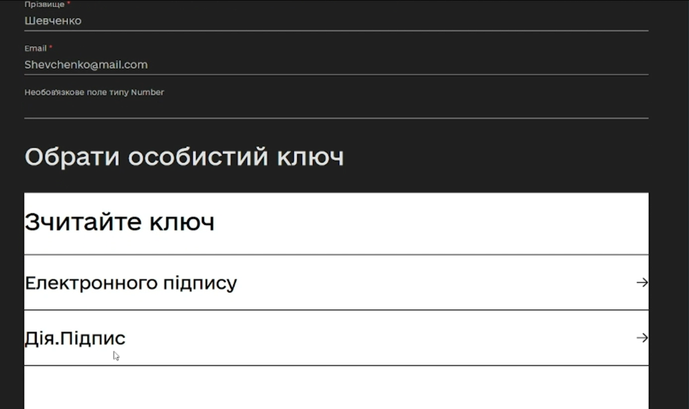
-
Оберіть опцію Електронного підпису. Далі відбувається перехід на сторінку id.gov.ua.
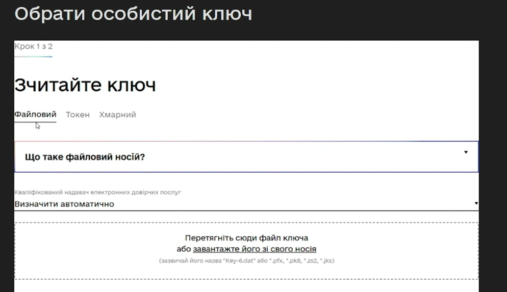
-
Оберіть значення Файловий, додайте особистий ключ та пароль до нього. Натисніть кнопку
Зчитати.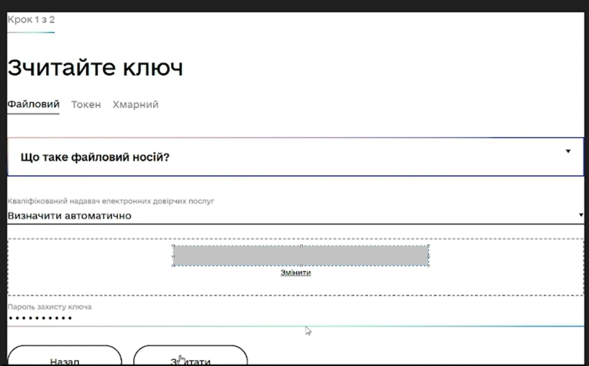
-
Відбувається зчитування даних з ключа та перехід на сторінку для підпису даних.
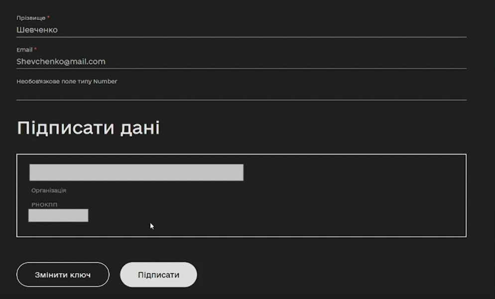
-
Натисніть
Підписати, дані успішно підписано.
5.2.2. Використання хмарного ключа для підпису даних
-
При переході на задачу підписання даних у бізнес-процесі, користувачам відображається наступний віджет.
-
Оберіть опцію Електронного підпису. Далі відбувається перехід на сторінку id.gov.ua.
-
Оберіть значення Хмарний, тип сервісу підпису та, залежно від обраного значення, або внесіть ідентифікатор, або проскануйте QR-код. Натисніть кнопку
Зчитати.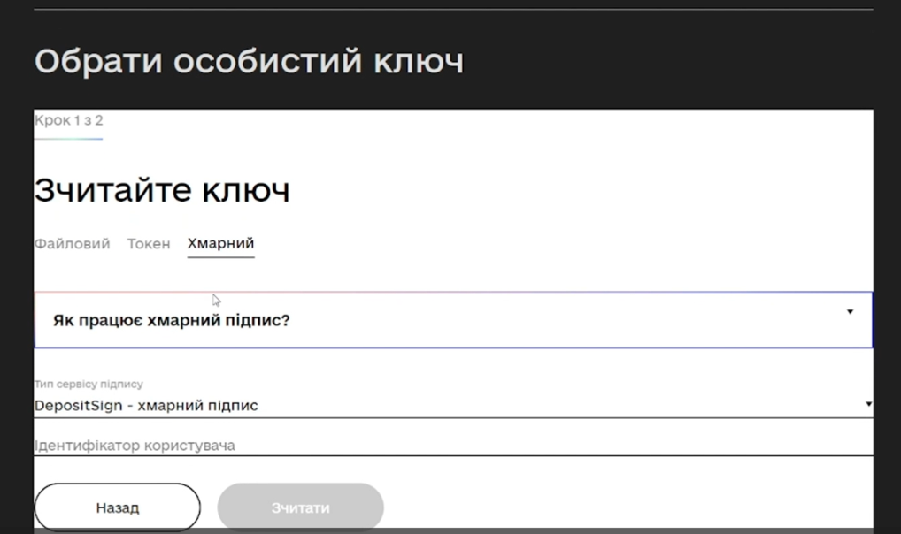
Обидві дії потребують підтвердження за допомогою мобільного телефона. Після цього відображається сторінка для підпису даних, де потрібно натиснути кнопку Підписатиі ще раз підтвердити дію за допомогою мобільного телефону.
5.2.3. Використання Дія.Підпис для підпису даних
-
У випадку, коли адміністратор реєстру вже налаштував у Control Plane у розділі Віджет підпису документів, зокрема у полі Посилання, адресу віджета id.gov.ua (наприклад, https://id.gov.ua/sign-widget/v20220527/), отримувач послуг — будь-то фізична особа чи ФОП — при підписі даних побачить наступний екран:
-
Проскануйте QR-код через мобільний додаток Дія. Відбувається підтвердження підпису.
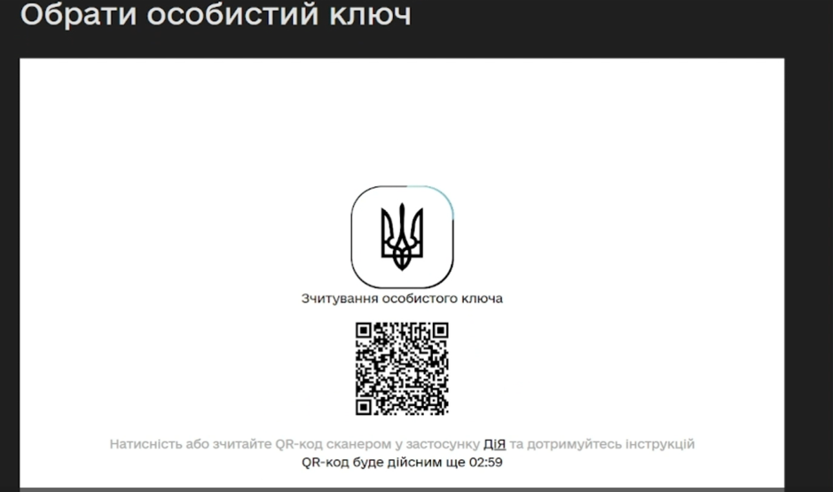
-
На наступній сторінці натисніть
Підписати. -
Тепер повторно підтвердьте підписання даних, ще раз просканувавши QR-код через мобільний додаток Дія. Після цього дані будуть успішно підписані.